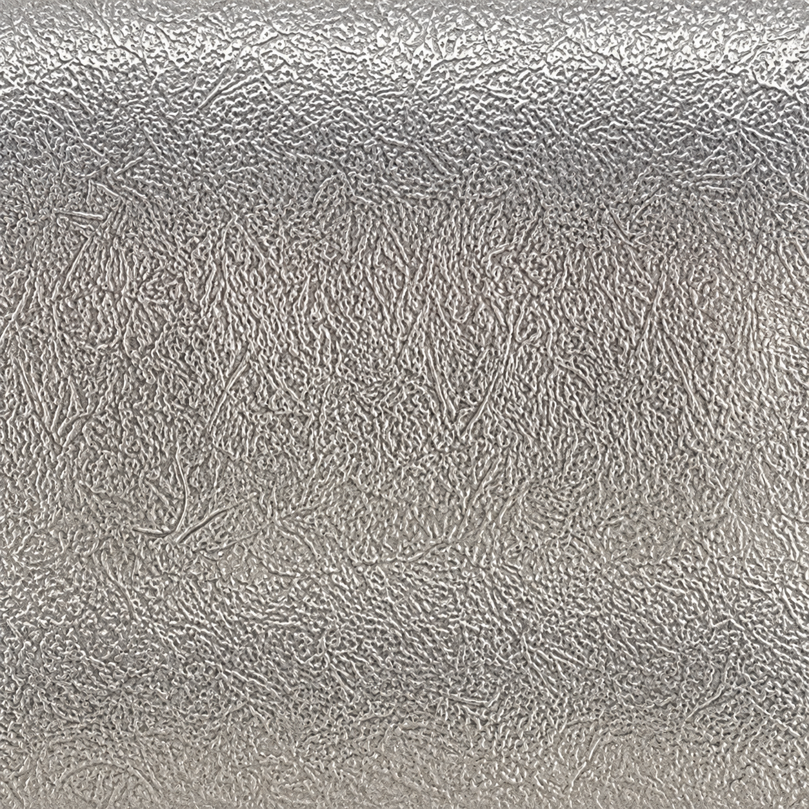
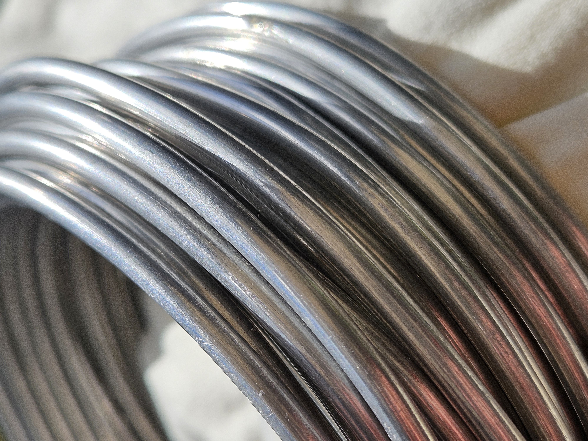
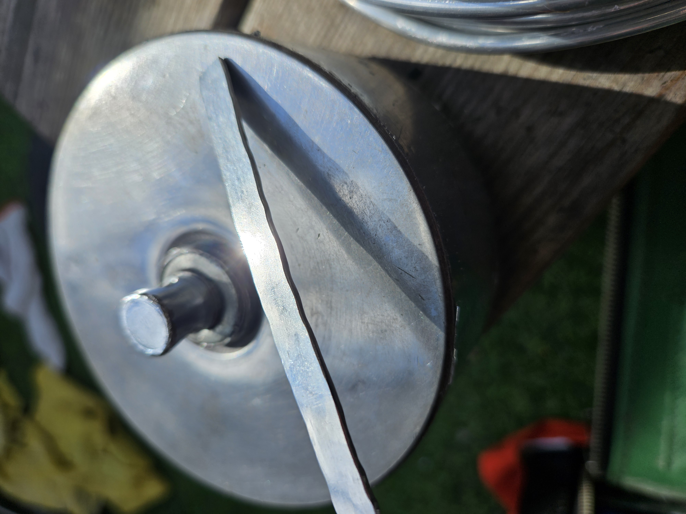
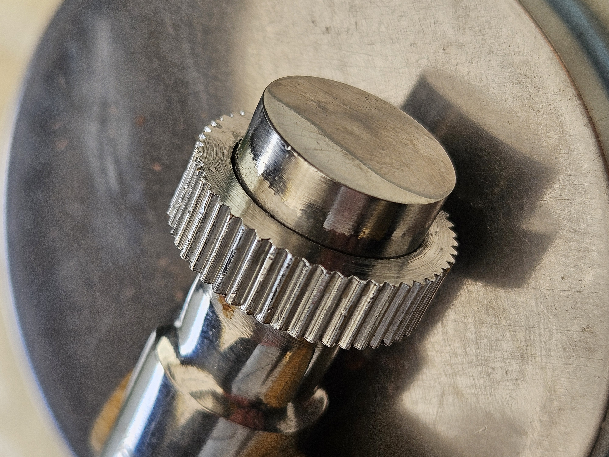

CIRCUITCURIOS

HANDGEMACHTE STRUKTUREN · ALUMINIUM · EINZELSTÜCKE
OBERFLÄCHEN
CircuitCurios übersetzt Druck, Bruch, Abrieb und organische Formen in Schmuck und Objekte – jede Oberfläche entsteht direkt am Material.
OBERFLÄCHEN ENTDECKEN
WIE ES ENTSTEHT
01 / OBERFLÄCHENARCHIV
KEINE DEKORATION.
SPUREN.
Nicht das Werkzeug steht im Mittelpunkt, sondern das sichtbare Ergebnis: Kräfte, Strukturen und zufällige Abweichungen werden zu einer eigenen Oberflächenidentität.
GEOLOGIE / DEFORMATION
TEKTONIK
PHYSIK / KRÄFTE
ABRASION
BIOLOGIE / FILTRATION
PORIFERA
GEOLOGIE / SCHUB
SCHERUNG
BIOLOGIE / STRUKTUR
SQUAMA
BIOLOGIE / ABDRUCK
FLORALE SPUR
SCHRITT 1→SCHRITT 2→SCHRITT 3
02 / PROZESS
DIREKT INS
MATERIAL.
Kein aufgedrucktes Muster. Die Oberfläche wird mechanisch, elektrolytisch oder durch gezielte Bearbeitung direkt im Werkstück erzeugt.
01
FORM WÄHLEN
Ausgangsform und Proportion werden reduziert gehalten, damit die Oberfläche selbst die Hauptrolle übernimmt.
02
STRUKTUR ERZEUGEN
Druck, Schlag, Abrieb, Ätzung oder andere Spuren verändern das Metall direkt.
03
OBERFLÄCHE LESEN
Was interessant wird, bleibt. Kleine Abweichungen werden nicht weggeglättet, sondern Teil des Einzelstücks.
04
FINISH
Matt, gebürstet oder poliert – das Finish bestimmt, wie stark Licht und Struktur miteinander arbeiten.
03 / FORMEN
EINE OBERFLÄCHE.
MEHRERE FORMEN.
Dieselbe Oberflächenidee wirkt als Ring, Anhänger oder Armreif völlig anders. Die Formen bekommen deshalb ihre eigene Seite.
FORMEN ANSEHEN →
04 / CIRCUITCURIOS
MATERIAL STATT
MAKELLOSIGKEIT.
Mich interessieren Oberflächen, die etwas passiert aussehen lassen: gedrückt, gebrochen, geschichtet, abgerieben oder gewachsen. CircuitCurios macht daraus tragbare und funktionale Einzelstücke – bewusst reduziert, damit das Material nicht zur Kulisse wird.
Das Ergebnis muss nicht perfekt wiederholbar sein. Im Gegenteil: genau die Unterschiede zwischen zwei Stücken machen die Oberfläche glaubwürdig.
„NICHT AUFMALEN,
SONDERN ENTSTEHEN LASSEN.“
05 / SHOP
AKTUELLE STÜCKE ANSEHEN.
ZUM SHOP ↗
IDENTITÄT
als




